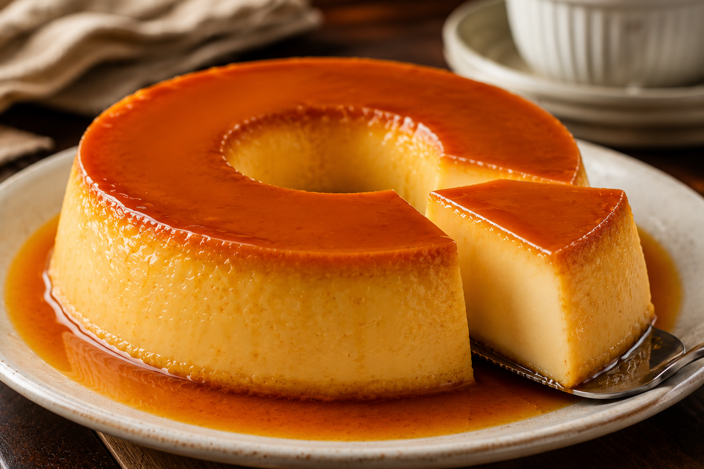

Home
Pudim de Leite Condensado

Descrição
O pudim de leite condensado é uma sobremesa clássica, cremosa e irresistível, conhecida pela textura macia e pelo sabor delicado que conquista
qualquer ocasião. Com uma calda dourada de caramelo e um preparo simples, é a escolha perfeita para almoços em família, comemorações ou para
adoçar o dia.
Feito com poucos ingredientes, esse pudim combina praticidade e sabor em uma receita tradicional que nunca sai de moda. Geladinho e bem
lisinho, fica ainda melhor servido após algumas horas na geladeira.
Ingredientes
Pudim
- 1 lata de leite condensado
- 2 medidas da lata de leite
- 3 ovos
Calda
- 1 xícara de açúcar
- 1/2 xícara de água
Modo de Preparo
- Em uma panela, derreta o açúcar até formar um caramelo dourado.
- Adicione a água com cuidado e mexa até a calda ficar lisa.
- Espalhe a calda em uma forma para pudim e reserve.
- No liquidificador, bata o leite condensado, o leite e os ovos até obter uma mistura homogênea.
- Despeje a mistura na forma caramelizada.
- Cubra a forma com papel-alumínio e leve ao forno em banho-maria a 180 °C por aproximadamente 1 hora e 30 minutos.
- Após assar, deixe esfriar e leve à geladeira por pelo menos 4 horas.
- Desenforme com cuidado e sirva gelado.